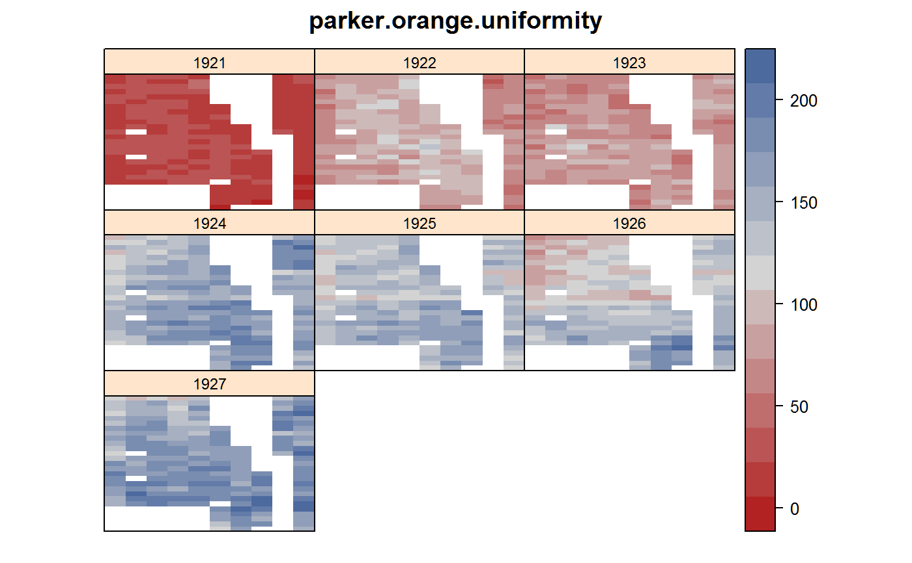
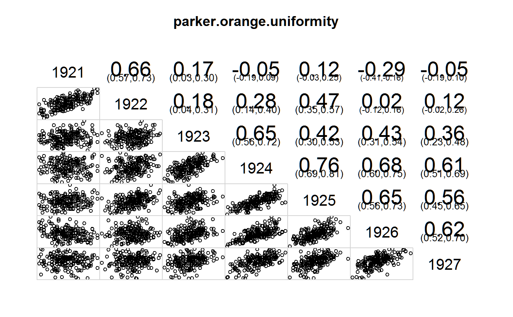
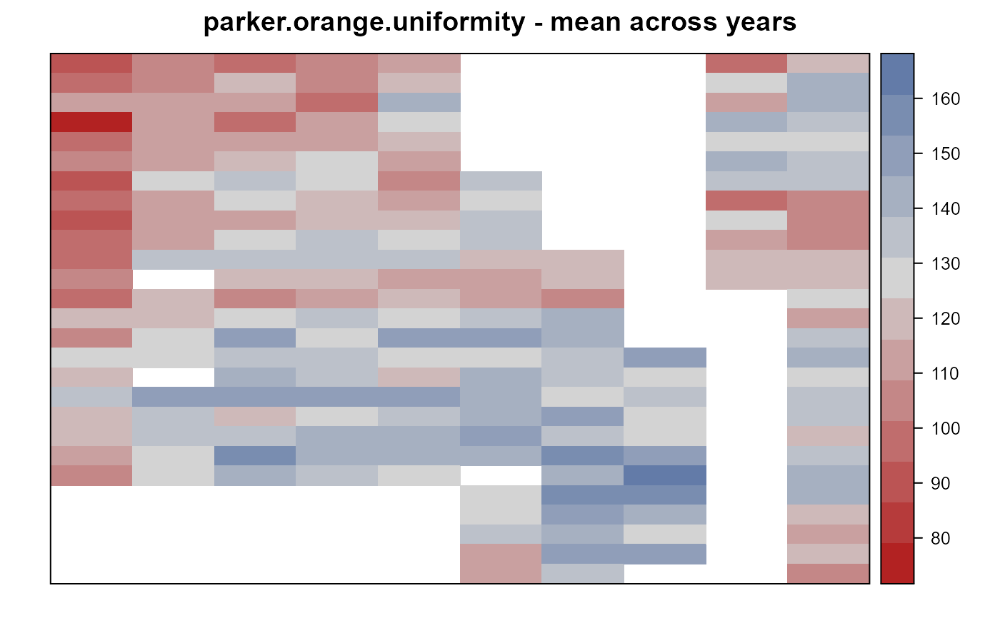

parker.orange.uniformity.RdUniformity trial of oranges at Riverside, CA, 1921-1927.
data("parker.orange.uniformity")
A data frame with 1364 observations on the following 4 variables.
yearyear
rowrow
colcolumn
yieldyield, pounds/tree for plot
An orchard of naval oranges was planted in 1917 at the University of California Citrus Experiment Station at Riverside. The orchard was maintained under uniform conditions for 10 years.
Eight Washington Navel orange trees in a single row constituted a plot. The planting distance is 20 feet between trees within the row and 24 feet between rows. Every other row was a guard row, so row 2 and row 4 were observational units, while row 3 was a guard row. For example, from row 2 to row 4 is 2*24 = 48 feet. Another way to think of this is that each plot was 48 feet wide, but only the middle 24 feet was harvested. At each end of the plot was one guard tree. Including guard trees at the row ends, each row plot was 10 trees * 20 feet = 200 feet long.
Field width (west-east) 10 plots * 200 feet = 2000 feet.
Field length (north-south) 27 plots * 48 feet = 1296 feet.
An investigation into the variability between plots included systematic soil surveys, soil moisture, soil nitrates, and inspection for differences in infestation of the citrus nematode. None of these factors was considered to be the primary cause of the variations in yield.
After the 7 years of uniformity trials, different treatments were applied to the plots.
Parker et al. state that soil heterogeneity is considerable and first-year yields are not predictive of future yields.
Table 25 has mean top volume per tree for each plot in 1926. Table 26 has mean area of trunk cross section.
E. R. Parker & L. D. Batchelor. (1932). Variation in the Yields of Fruit Trees in Relation to the Planning of Future Experiments. Hilgardia, 7(2), 81-161. Tables 3-9. http://doi.org/10.3733/hilg.v07n02p081
Batchelor, L. D. (Leon Dexter), b. 1884; Parker, E. R. (Edwin Robert), 1896-1952; McBride, Robert, d. 1927. (1928) Studies preliminary to the establishment of a series of fertilizer trials in a bearing citrus grove. Vol B451. Berkeley, Cal. : Agricultural Experiment Station https://archive.org/details/studiesprelimina451batc
library(agridat) data(parker.orange.uniformity) dat <- parker.orange.uniformity # Parker fig 2, field plan libs(desplot) dat$year <- factor(dat$year) # 27 rows * 48 ft x 10 cols * 200 feet desplot(yield ~ col*row|year, data = dat, flip = TRUE, aspect = 27*48/(10*200), # true aspect main = "parker.orange.uniformity")# CV across plots in each year. Similar to Parker table 11 cv <- function(x) { x <- na.omit(x) sd(x)/mean(x) } round(100*tapply(dat$yield, dat$year, cv),2)#> 1921 1922 1923 1924 1925 1926 1927 #> 38.68 21.09 18.74 14.38 13.81 22.32 13.86# Correlation of plot yields across years. Similar to Parker table 15. # Paker et al may have calculated correlation differently. libs(reshape2) libs(corrgram) dat2 <- acast(dat, row+col ~ year, value.var = 'yield') round(cor(dat2, use = "pair"),3)#> 1921 1922 1923 1924 1925 1926 1927 #> 1921 1.000 0.660 0.168 -0.046 0.116 -0.290 -0.046 #> 1922 0.660 1.000 0.177 0.275 0.470 0.025 0.121 #> 1923 0.168 0.177 1.000 0.650 0.422 0.433 0.361 #> 1924 -0.046 0.275 0.650 1.000 0.759 0.681 0.605 #> 1925 0.116 0.470 0.422 0.759 1.000 0.651 0.558 #> 1926 -0.290 0.025 0.433 0.681 0.651 1.000 0.617 #> 1927 -0.046 0.121 0.361 0.605 0.558 0.617 1.000corrgram(dat2, lower = panel.pts, upper = panel.conf, main="parker.orange.uniformity")# Fertility index. Mean across years (ignoring 1921). Parker table 16 dat3 <- aggregate(yield ~ row+col, data = subset(dat, year !=1921 ), FUN = mean, na.rm = TRUE) round(acast(dat3, row ~ col, value.var = 'yield'),0)#> 1 2 3 4 5 6 7 8 9 10 #> 1 87 103 96 103 113 NA NA NA 100 121 #> 2 95 106 119 104 120 NA NA NA 127 140 #> 3 111 110 109 99 140 NA NA NA 116 141 #> 4 78 112 98 114 128 NA NA NA 139 137 #> 5 98 113 116 110 122 NA NA NA 130 128 #> 6 102 109 122 128 113 NA NA NA 140 133 #> 7 93 126 137 128 108 132 NA NA 132 138 #> 8 100 116 129 119 113 130 NA NA 100 107 #> 9 92 115 112 119 120 132 NA NA 124 105 #> 10 98 116 127 135 124 131 NA NA 116 104 #> 11 98 138 132 137 138 116 120 NA 122 124 #> 12 103 NA 121 119 115 114 123 NA 118 121 #> 13 97 121 104 110 117 115 103 NA NA 130 #> 14 119 119 129 132 129 138 140 NA NA 116 #> 15 108 131 148 130 152 153 140 NA NA 136 #> 16 127 127 135 134 126 129 133 152 NA 139 #> 17 119 NA 140 134 121 139 134 128 NA 128 #> 18 135 146 146 147 150 143 127 138 NA 136 #> 19 120 137 119 124 136 142 148 128 NA 133 #> 20 121 138 135 139 142 150 132 130 NA 122 #> 21 114 128 157 146 144 142 155 153 NA 138 #> 22 107 126 143 134 126 NA 144 165 NA 144 #> 23 NA NA NA NA NA 126 155 155 NA 146 #> 24 NA NA NA NA NA 129 150 140 NA 118 #> 25 NA NA NA NA NA 134 142 131 NA 115 #> 26 NA NA NA NA NA 114 150 149 NA 122 #> 27 NA NA NA NA NA 114 136 NA NA 108libs(desplot) desplot(yield ~ col*row, data = dat3, flip = TRUE, aspect = 27*48/(10*200), # true aspect main = "parker.orange.uniformity - mean across years")